mfrmr Visual Diagnostics
Source:vignettes/mfrmr-visual-diagnostics.Rmd
mfrmr-visual-diagnostics.RmdThis vignette is a compact map of the main base-R diagnostics in
mfrmr. It is organized around four practical questions:
- How well do persons, facet levels, and categories target each other?
- Which observations or levels look locally unstable?
- Is the design linked well enough across subsets or forms?
- Where do residual structure and interaction screens point next?
All examples use packaged data and
preset = "publication" so the same code is suitable for
manuscript-oriented graphics.
If you are selecting figures for a report, use
reporting_checklist() before or alongside this vignette.
Its "Visual Displays" rows now mirror the public plotting
family shown here.
Minimal setup
library(mfrmr)
toy <- load_mfrmr_data("example_operational")
fit <- fit_mfrm(
toy,
person = "Person",
facets = c("Rater", "Criterion"),
score = "Score",
method = "MML",
model = "RSM"
)
diag <- diagnose_mfrm(fit, residual_pca = "none")
checklist <- reporting_checklist(fit, diagnostics = diag)
subset(
checklist$checklist,
Section == "Visual Displays",
c("Item", "Available", "NextAction")
)
#> Item Available
#> 25 Wright map TRUE
#> 26 QC / facet dashboard TRUE
#> 27 Residual PCA visuals FALSE
#> 28 Connectivity / design-matrix visual TRUE
#> 29 Inter-rater / displacement visuals TRUE
#> 30 Strict marginal visuals TRUE
#> 31 Bias / DIF visuals FALSE
#> 32 Precision / information curves TRUE
#> 33 Fit/category visuals TRUE
#> NextAction
#> 25 Include a Wright map when the manuscript benefits from a shared-scale targeting display.
#> 26 Use the dashboard as a first-pass triage view, then move to the specific follow-up plot behind each flag.
#> 27 Run residual PCA if you want scree/loadings visuals for residual-structure follow-up.
#> 28 Use the design-matrix view to support linkage and comparability claims.
#> 29 Use displacement and inter-rater views to localize QC issues after dashboard screening.
#> 30 Treat strict marginal plots as exploratory corroboration screens, then corroborate with design review and legacy diagnostics.
#> 31 Run bias or DIF screening before discussing interaction-level visuals.
#> 32 Use information curves to describe precision across theta when that is the reporting question.
#> 33 Use category curves and fit visuals as local descriptive follow-up after QC screening.1. Targeting and scale structure
Use the Wright map first when you want one shared logit view of persons, facet levels, and step thresholds.
plot(fit, type = "wright", preset = "publication", show_ci = TRUE)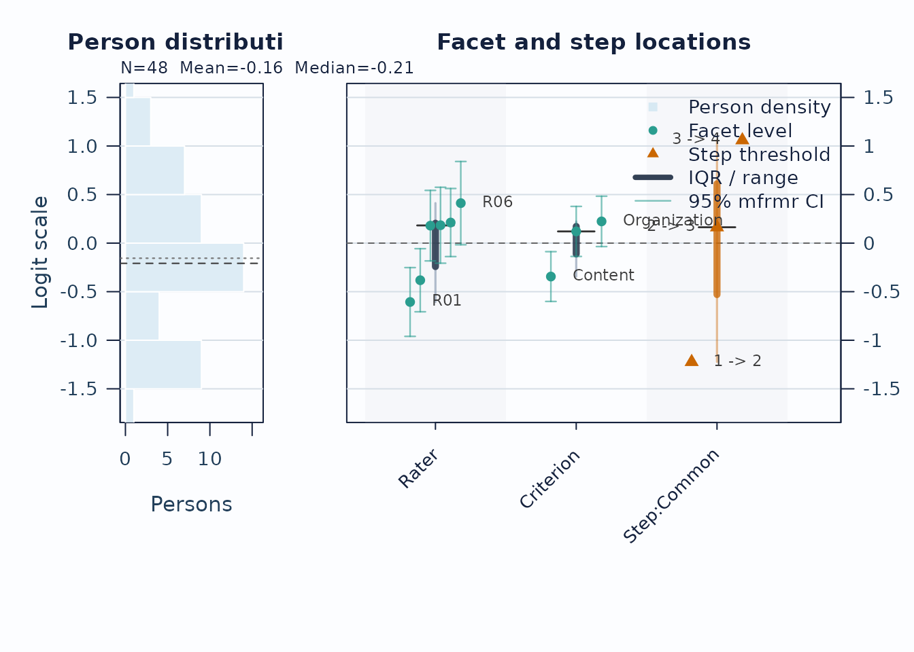
Interpretation:
- Compare person density on the left to facet and step locations on the right.
- Large gaps suggest weaker targeting in that logit region.
- Wide overlap in marginal confidence whiskers suggests imprecision; estimate the relevant pairwise contrast directly before claiming that two levels are separated or indistinguishable.
The native view above remains the recommended analytic figure because
it keeps facet uncertainty and fitted step locations visible. For a
closer FACETS-facing handoff, switch the renderer and leave
show_ci at its default FALSE. The fitted
coordinates do not change.
plot(
fit,
type = "wright",
renderer = "facets",
category_labels = c(
`1` = "Beginning", `2` = "Developing", `3` = "Secure", `4` = "Advanced"
)
)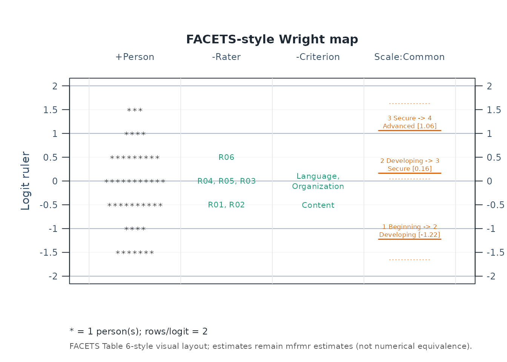
This renderer uses one common logit ruler, a *
person-frequency column, signed facet headers, every facet level, and
short labeled score-transition lines. It is FACETS-style visual
correspondence, not a claim that mfrmr and FACETS produce
numerically identical estimates. A numerical comparison requires output
from a documented FACETS version and aligned estimator, identification,
score, and orientation settings. Set show_ci = TRUE only
when you deliberately want a hybrid FACETS-style ruler with the mfrmr
uncertainty extension. Use draw = FALSE and inspect the
facets_style tables when rebuilding the display with
ggplot2 or another graphics system.
Next, use the pathway map when you want to see how expected scores progress across theta.
plot(fit, type = "pathway", preset = "publication")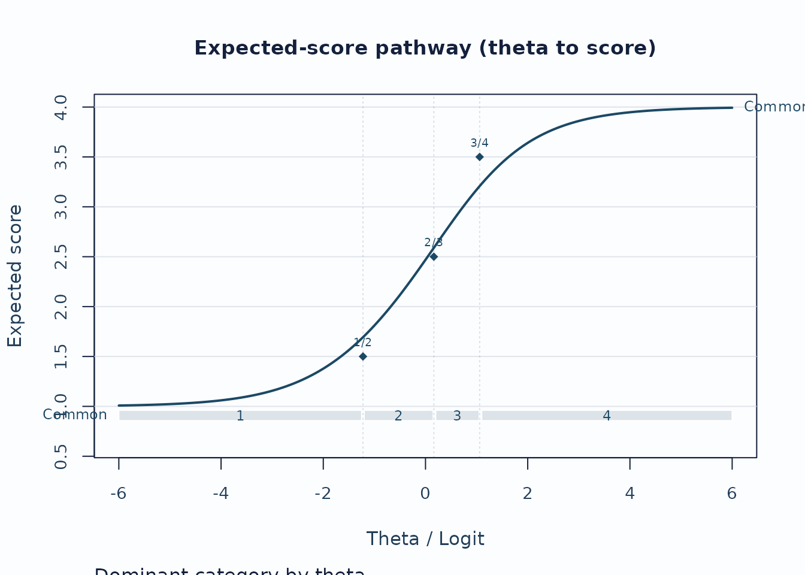
Interpretation:
- Steeper rises indicate stronger score progression.
- Dominant-category strips show where each category is most likely to govern the score.
- Flat or compressed regions suggest weaker category separation.
The expected-score pathway is not a fit pathway. To review measure against Infit, place Infit on the horizontal axis and include person rows explicitly:
plot(
fit,
type = "fit_pathway",
diagnostics = diag,
fit_stat = "Infit",
fit_scale = "mnsq",
include_person = TRUE,
show_ci = TRUE,
preset = "publication"
)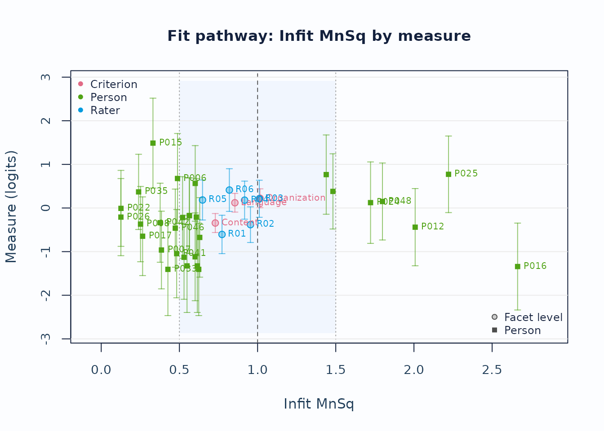
Interpretation:
- The vertical axis remains the fitted measure in logits.
- The horizontal axis is Infit MnSq; the 1.0 line is the model-expectation reference.
- Vertical whiskers show measure uncertainty; person and non-person rows have distinct uncertainty bases, recorded in the draw-free payload metadata.
- Treat displaced or flagged rows as review prompts, not automatic exclusions.
2. Local response and level issues
Unexpected-response screening is useful for case-level review.
plot_unexpected(
fit,
diagnostics = diag,
abs_z_min = 1.5,
prob_max = 0.4,
plot_type = "scatter",
preset = "publication"
)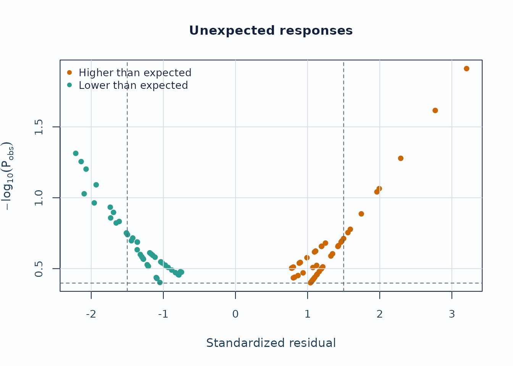
Interpretation:
- Upper corners combine large residual mismatch with low model probability.
- Repeated appearances of the same persons or levels are more informative than a single extreme point.
Displacement focuses on level movement rather than individual responses.
plot_displacement(
fit,
diagnostics = diag,
anchored_only = FALSE,
plot_type = "lollipop",
preset = "publication"
)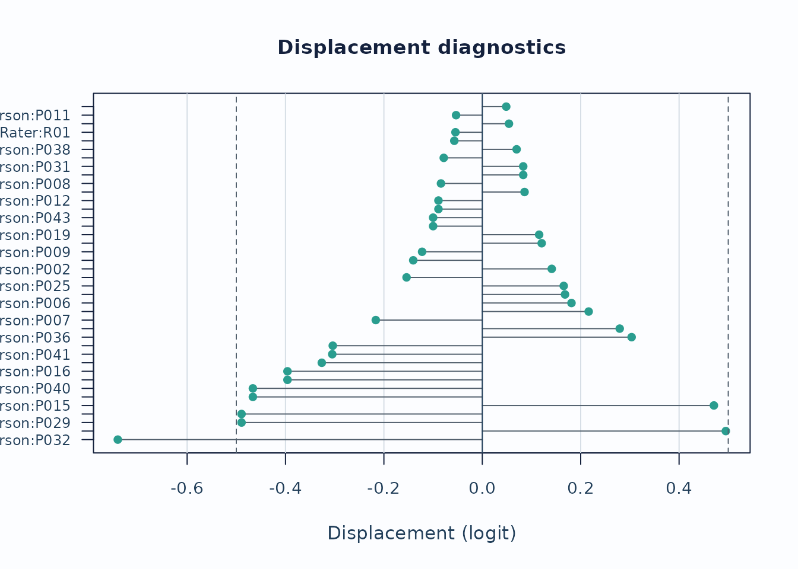
Interpretation:
- Large absolute displacement indicates stronger tension between observed data and current calibration.
- For anchored runs, this is especially useful as an anchor-robustness screen.
Strict marginal follow-up
When you need the package’s latent-integrated follow-up path, switch
to MML and request diagnostic_mode = "both" so
the legacy and strict branches stay visible side by side. The chunk
below uses compact quadrature for optional local execution; final
reporting should be refit with the package default or a higher
quadrature setting.
fit_strict <- fit_mfrm(
toy,
person = "Person",
facets = c("Rater", "Criterion"),
score = "Score",
method = "MML",
model = "RSM",
quad_points = 7,
maxit = 40
)
diag_strict <- diagnose_mfrm(
fit_strict,
residual_pca = "none",
diagnostic_mode = "both"
)
strict_checklist <- reporting_checklist(fit_strict, diagnostics = diag_strict)
subset(
strict_checklist$checklist,
Section == "Visual Displays" &
Item %in% c("QC / facet dashboard", "Strict marginal visuals"),
c("Item", "Available", "NextAction")
)
#> Item Available
#> 26 QC / facet dashboard TRUE
#> 30 Strict marginal visuals TRUE
#> NextAction
#> 26 Use the dashboard as a first-pass triage view, then move to the specific follow-up plot behind each flag.
#> 30 Treat strict marginal plots as exploratory corroboration screens, then corroborate with design review and legacy diagnostics.
plot_marginal_fit(
diag_strict,
top_n = 12,
preset = "publication"
)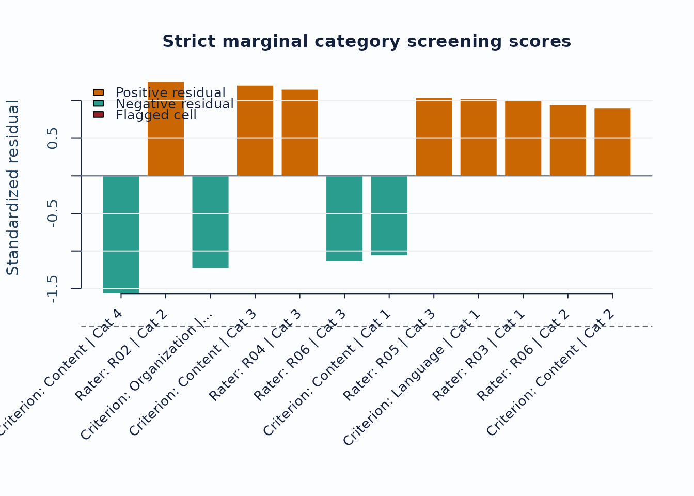
Interpretation:
- Treat strict marginal plots as exploratory corroboration screens, not as standalone inferential tests.
- Use the checklist rows to confirm that the current run actually supports the strict branch before routing figures into a report.
- When pairwise follow-up is needed, continue with
plot_marginal_pairwise(diag_strict, preset = "publication").
3. Linking and coverage
When the design may be incomplete or spread across subsets, inspect the coverage matrix before interpreting cross-subset contrasts.
sc <- subset_connectivity_report(fit, diagnostics = diag)
plot(sc, type = "design_matrix", preset = "publication")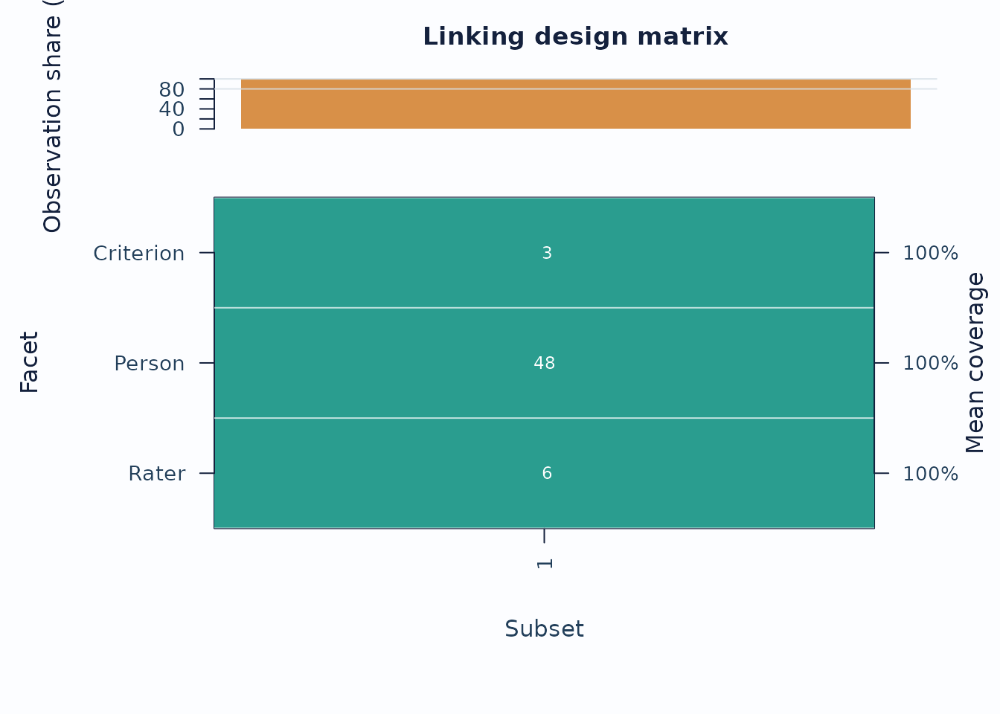
Interpretation:
- Sparse rows or columns indicate weak subset coverage.
- Facets with low overlap are weaker anchors for cross-subset comparisons.
If you are working across administrations, follow up with anchor-drift plots:
drift <- detect_anchor_drift(current_fit, baseline = baseline_anchors)
plot_anchor_drift(drift, type = "heatmap", preset = "publication")4. Residual structure and interaction screens
Residual PCA is a follow-up layer after the main fit screen.
diag_pca <- diagnose_mfrm(fit, residual_pca = "both", pca_max_factors = 4)
pca <- analyze_residual_pca(diag_pca, mode = "both")
plot_residual_pca(pca, mode = "overall", plot_type = "scree", preset = "publication")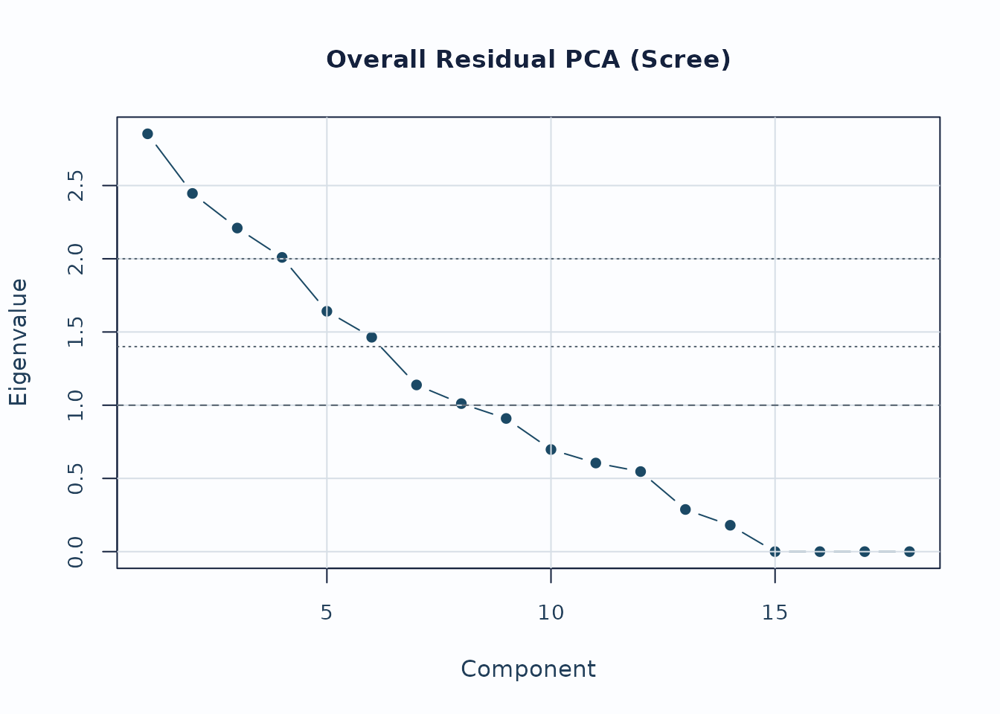
Interpretation:
- Early components with noticeably larger eigenvalues deserve follow-up.
- Scree review should usually be paired with loading review for the component of interest.
For interaction screening, use the packaged bias example.
bias_df <- load_mfrmr_data("example_bias")
fit_bias <- fit_mfrm(
bias_df,
person = "Person",
facets = c("Rater", "Criterion"),
score = "Score",
method = "MML",
model = "RSM",
quad_points = 7
)
diag_bias <- diagnose_mfrm(fit_bias, residual_pca = "none")
bias <- estimate_bias(fit_bias, diag_bias, facet_a = "Rater", facet_b = "Criterion")
plot_bias_interaction(
bias,
plot = "facet_profile",
preset = "publication"
)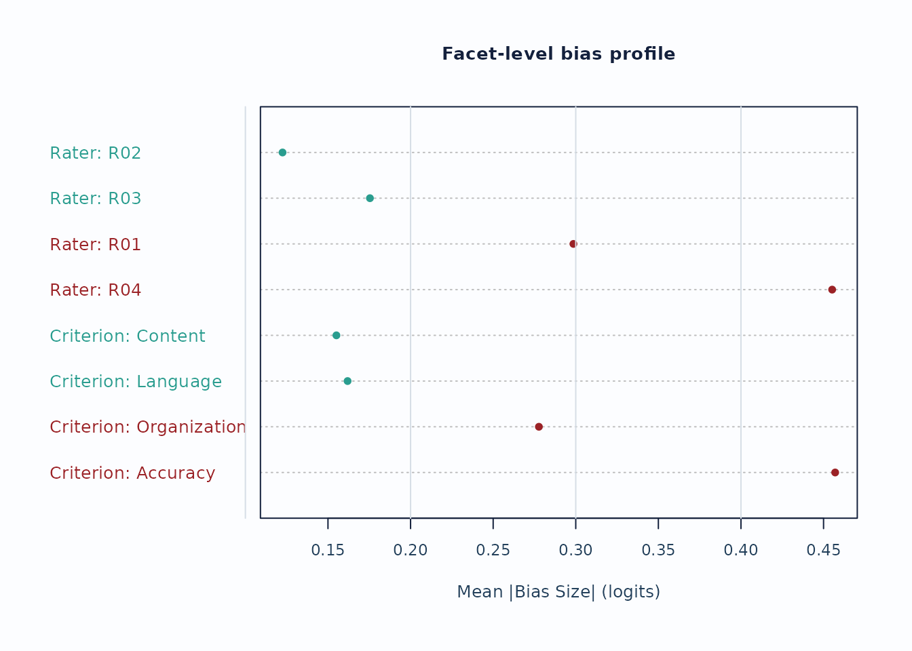
Interpretation:
- Facet profiles are useful for seeing whether a small number of levels drives most flagged interaction cells.
- Treat these plots as screening evidence; confirm with the corresponding tables and narrative reports.
5. Custom figures without losing the evidence boundary
The built-in plots are intended as safe defaults. Use
preset = "monochrome" when a journal, accessibility review,
or print workflow needs grayscale output. For journal figures, teaching
material, dashboards, or lab-specific styles, use
draw = FALSE and the plot-data accessors instead of editing
screenshots.
plot(fit, type = "wright", preset = "monochrome")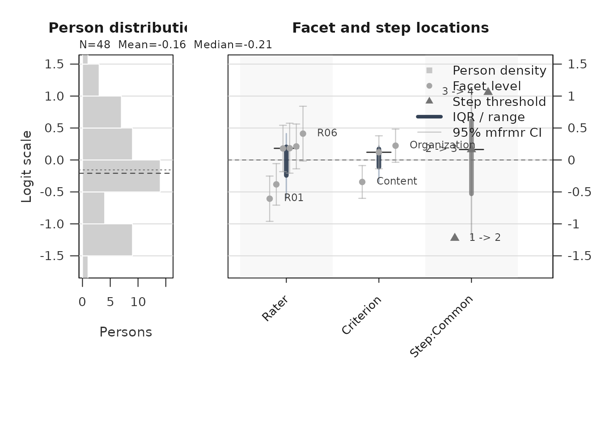
wright_payload <- plot(fit, type = "wright", draw = FALSE, preset = "publication")
plot_data_components(wright_payload)
#> PlotName Component Role ObjectType Rows
#> 1 wright_map wright_style style character NA
#> 2 wright_map renderer scalar_or_vector character NA
#> 3 wright_map visual_contract scalar_or_vector character NA
#> 4 wright_map person table_data data.frame 48
#> 5 wright_map person_hist metadata list:histogram NA
#> 6 wright_map person_stats table_data data.frame 1
#> 7 wright_map locations table_data data.frame 12
#> 8 wright_map label_points table_data data.frame 7
#> 9 wright_map group_summary summary_or_guidance data.frame 3
#> 10 wright_map group_levels settings character NA
#> 11 wright_map y_range settings double NA
#> 12 wright_map display_settings settings data.frame 1
#> 13 wright_map label_limit scalar_or_vector integer NA
#> 14 wright_map retention table_data data.frame 3
#> 15 wright_map retention_note summary_or_guidance character NA
#> 16 wright_map title scalar_or_vector character NA
#> 17 wright_map subtitle scalar_or_vector character NA
#> 18 wright_map show_ci scalar_or_vector logical NA
#> 19 wright_map uncertainty_display scalar_or_vector character NA
#> 20 wright_map group scalar_or_vector NULL NA
#> 21 wright_map preset settings character NA
#> 22 wright_map legend style data.frame 5
#> 23 wright_map reference_lines annotation data.frame 1
#> 24 wright_map plot_name scalar_or_vector character NA
#> 25 wright_map fit_readiness fit_review data.frame 5
#> 26 wright_map interpretation_status summary_or_guidance character NA
#> 27 wright_map interpretation_note summary_or_guidance character NA
#> Columns Length IsTabular Accessor
#> 1 NA 1 FALSE plot_data(x, component = "wright_style")
#> 2 NA 1 FALSE plot_data(x, component = "renderer")
#> 3 NA 1 FALSE plot_data(x, component = "visual_contract")
#> 4 6 6 TRUE plot_data(x, component = "person")
#> 5 6 6 FALSE plot_data(x, component = "person_hist")
#> 6 4 4 TRUE plot_data(x, component = "person_stats")
#> 7 30 30 TRUE plot_data(x, component = "locations")
#> 8 30 30 TRUE plot_data(x, component = "label_points")
#> 9 16 16 TRUE plot_data(x, component = "group_summary")
#> 10 NA 3 FALSE plot_data(x, component = "group_levels")
#> 11 NA 2 FALSE plot_data(x, component = "y_range")
#> 12 8 8 TRUE plot_data(x, component = "display_settings")
#> 13 NA 1 FALSE plot_data(x, component = "label_limit")
#> 14 6 6 TRUE plot_data(x, component = "retention")
#> 15 NA 1 FALSE plot_data(x, component = "retention_note")
#> 16 NA 1 FALSE plot_data(x, component = "title")
#> 17 NA 1 FALSE plot_data(x, component = "subtitle")
#> 18 NA 1 FALSE plot_data(x, component = "show_ci")
#> 19 NA 1 FALSE plot_data(x, component = "uncertainty_display")
#> 20 NA 0 FALSE plot_data(x, component = "group")
#> 21 NA 1 FALSE plot_data(x, component = "preset")
#> 22 4 4 TRUE plot_data(x, component = "legend")
#> 23 5 5 TRUE plot_data(x, component = "reference_lines")
#> 24 NA 1 FALSE plot_data(x, component = "plot_name")
#> 25 2 2 TRUE plot_data(x, component = "fit_readiness")
#> 26 NA 1 FALSE plot_data(x, component = "interpretation_status")
#> 27 NA 1 FALSE plot_data(x, component = "interpretation_note")
#> Notes
#> 1
#> 2
#> 3
#> 4
#> 5
#> 6
#> 7
#> 8
#> 9 Use for captions, QA checks, or report text.
#> 10
#> 11
#> 12
#> 13
#> 14
#> 15 Use for captions, QA checks, or report text.
#> 16
#> 17
#> 18
#> 19
#> 20
#> 21
#> 22 Use to reproduce color, line-type, or legend mappings.
#> 23 Use with primary data to draw thresholds, labels, and reference lines.
#> 24
#> 25
#> 26 Use for captions, QA checks, or report text.
#> 27 Use for captions, QA checks, or report text.
#> ColumnNames
#> 1
#> 2
#> 3
#> 4 Person, Estimate, SD, PosteriorSD, SE, Extreme
#> 5 breaks, counts, density, mids, xname, equidist
#> 6 N, Mean, Median, SD
#> 7 Group, Label, PlotType, Estimate, SE, CI_Level, SE_Method, Measure_Source, CI_Lower, CI_Upper, Step, StepIndex, BoundarySeparated, XBase, X, OriginalEstimate, BelowRange, AboveRange, DisplayEstimate, DisplayLabel, OriginalCI_Lower, OriginalCI_Upper, DisplayCI_Lower, DisplayCI_Upper, CIClippedLower, CIClippedUpper, CIClipped, BoundaryEnd, CISuppressed, CIDisplayStatus
#> 8 Group, Label, PlotType, Estimate, SE, CI_Level, SE_Method, Measure_Source, CI_Lower, CI_Upper, Step, StepIndex, BoundarySeparated, XBase, X, OriginalEstimate, BelowRange, AboveRange, DisplayEstimate, DisplayLabel, OriginalCI_Lower, OriginalCI_Upper, DisplayCI_Lower, DisplayCI_Upper, CIClippedLower, CIClippedUpper, CIClipped, BoundaryEnd, CISuppressed, CIDisplayStatus
#> 9 Group, PlotType, Min, Q1, Median, Q3, Max, DisplayMin, DisplayQ1, DisplayMedian, DisplayQ3, DisplayMax, N, XBase, TargetGap, DisplayTargetGap
#> 10
#> 11
#> 12 Renderer, LowerLogit, UpperLogit, AutoRangePolicy, BoundaryLevelsAtEnds, CIClippedCount, BoundaryCIEndpointCount, CIDisplayPolicy
#> 13
#> 14 Component, Shown, Total, Omitted, RequestedTopN, Complete
#> 15
#> 16
#> 17
#> 18
#> 19
#> 20
#> 21
#> 22 label, role, aesthetic, value
#> 23 axis, value, label, linetype, role
#> 24
#> 25 Domain, Status
#> 26
#> 27
locations <- plot_data(wright_payload, component = "locations")
head(locations)
#> # A tibble: 6 × 30
#> Group Label PlotType Estimate SE CI_Level SE_Method Measure_Source CI_Lower
#> <fct> <chr> <chr> <dbl> <dbl> <dbl> <chr> <chr> <dbl>
#> 1 Rater R01 Facet l… -0.606 0.181 0.95 Observat… fit + observa… -0.960
#> 2 Rater R02 Facet l… -0.382 0.166 0.95 Observat… fit + observa… -0.707
#> 3 Rater R04 Facet l… 0.180 0.185 0.95 Observat… fit + observa… -0.183
#> 4 Rater R05 Facet l… 0.184 0.199 0.95 Observat… fit + observa… -0.207
#> 5 Rater R03 Facet l… 0.212 0.179 0.95 Observat… fit + observa… -0.138
#> 6 Rater R06 Facet l… 0.412 0.219 0.95 Observat… fit + observa… -0.0168
#> # ℹ 21 more variables: CI_Upper <dbl>, Step <chr>, StepIndex <int>,
#> # BoundarySeparated <lgl>, XBase <dbl>, X <dbl>, OriginalEstimate <dbl>,
#> # BelowRange <lgl>, AboveRange <lgl>, DisplayEstimate <dbl>,
#> # DisplayLabel <chr>, OriginalCI_Lower <dbl>, OriginalCI_Upper <dbl>,
#> # DisplayCI_Lower <dbl>, DisplayCI_Upper <dbl>, CIClippedLower <lgl>,
#> # CIClippedUpper <lgl>, CIClipped <lgl>, BoundaryEnd <chr>,
#> # CISuppressed <lgl>, CIDisplayStatus <chr>
pathway_long <- plot_data(
fit,
type = "pathway",
component = "pathway_long",
preset = "publication"
)
head(pathway_long[, c("Layer", "CurveGroup", "Theta", "Value")])
#> Layer CurveGroup Theta Value
#> 1 expected_score Common -6.00 1.008386
#> 2 expected_score Common -5.95 1.008814
#> 3 expected_score Common -5.90 1.009264
#> 4 expected_score Common -5.85 1.009736
#> 5 expected_score Common -5.80 1.010233
#> 6 expected_score Common -5.75 1.010755When you build a custom figure, keep the helper’s guidance tables with the plot data:
names(wright_payload$data)
#> [1] "wright_style" "renderer" "visual_contract"
#> [4] "person" "person_hist" "person_stats"
#> [7] "locations" "label_points" "group_summary"
#> [10] "group_levels" "y_range" "display_settings"
#> [13] "label_limit" "retention" "retention_note"
#> [16] "title" "subtitle" "show_ci"
#> [19] "uncertainty_display" "group" "preset"
#> [22] "legend" "reference_lines" "plot_name"
#> [25] "fit_readiness" "interpretation_status" "interpretation_note"
wright_payload$data$reference_lines
#> axis value label linetype role
#> 1 h 0 Centered logit reference dashed referenceThose metadata are the guardrails for captions and interpretation. They let you change colors, labels, panels, or rendering technology while preserving the same measurement scale, reference lines, caveats, and reporting role used by the package-native plot.
6. Secondary visual layer
The package ships a complementary visual layer for teaching and diagnostic follow-up. These helpers are not default reporting figures; use them after the main screens above.
-
plot_guttman_scalogram(fit, diagnostics)renders a person x facet-level response matrix with an unexpected-response overlay, for teaching-oriented scalogram intuition and local triage. -
plot_residual_qq(fit, diagnostics)plots a Normal Q-Q of person-level standardized residual aggregates as exploratory follow-up on residual tail behavior. -
plot_rater_trajectory(list(T1 = fit_a, T2 = fit_b))tracks rater severity across named waves. The helper does not perform linking; supply waves that have already been placed on a common anchored scale (seevignette("mfrmr-linking-and-dff")) before interpreting movement as rater drift. -
plot_rater_agreement_heatmap(fit, diagnostics)renders a compact pairwise rater x rater agreement matrix; passmetric = "correlation"to colour by the Pearson-styleCorrcolumn instead of exact agreement. -
response_time_review(data, person, facets, time)summarizes response-time metadata by person, facet, and score category. Pair it withplot_response_time_review()for distribution and grouped timing plots. This is a descriptive QC layer, not a joint speed-accuracy model. -
plot_shrinkage_funnel(fit_eb, show_ci = TRUE)draws raw and empirical-Bayes shrunken facet estimates on the same row, with optional confidence whiskers for both estimates. Use this only afterapply_empirical_bayes_shrinkage()orfit_mfrm(..., facet_shrinkage = "empirical_bayes").
Response-time QC context
If your rating-event data include response times, review them separately from the MFRM likelihood. Rapid and slow response-time flags are descriptive quality-control prompts; they do not change measures and should not be treated as proof of disengagement, cheating, or speededness.
toy_rt <- toy
toy_rt$ResponseTime <- 12 + (seq_len(nrow(toy_rt)) %% 7) +
as.numeric(toy_rt$Score)
toy_rt$ResponseTime[1] <- 2
toy_rt$ResponseTime[2] <- 38
rt <- response_time_review(
toy_rt,
person = "Person",
facets = c("Rater", "Criterion"),
score = "Score",
time = "ResponseTime",
rapid_quantile = 0.10,
slow_quantile = 0.90
)
summary(rt)
#> mfrmr response-time review
#>
#> Rows ValidRows DroppedRows Persons Facets TimeColumn ScoreColumn TimeUnit
#> 282 282 0 48 2 ResponseTime Score seconds
#> MedianTime MeanLogTime RapidThreshold SlowThreshold RapidRate SlowRate
#> 17.5 2.841728 14 20 0.1205674 0.1950355
#> FlaggedGroups
#> 27
#> InterpretationBoundary
#> Descriptive response-time screening; not a joint speed-accuracy model and not a fit/pass-fail rule.
#>
#> Thresholds:
#> Threshold Value Basis TimeUnit
#> rapid 14 quantile_0.1 seconds
#> slow 20 quantile_0.9 seconds
#>
#> Flagged groups:
#> Source Group Flag Rate N ThresholdRate
#> person P014 high_rapid_response_rate 0.3333333 6 0.25
#> person P016 high_rapid_response_rate 0.3333333 6 0.25
#> person P023 high_rapid_response_rate 0.3333333 6 0.25
#> person P033 high_rapid_response_rate 0.3333333 6 0.25
#> person P040 high_rapid_response_rate 0.3333333 6 0.25
#> person P041 high_rapid_response_rate 0.3333333 6 0.25
#> person P002 high_slow_response_rate 0.3333333 6 0.25
#> person P003 high_slow_response_rate 0.3333333 6 0.25
#> person P005 high_slow_response_rate 0.3333333 6 0.25
#> person P006 high_slow_response_rate 0.6000000 5 0.25
#>
#> Notes:
#> - Response-time review is descriptive; it does not change fit_mfrm estimates.
#> - Score-level summaries are descriptive and should not be read as response-time model parameters.
plot_response_time_review(rt, type = "distribution", preset = "publication")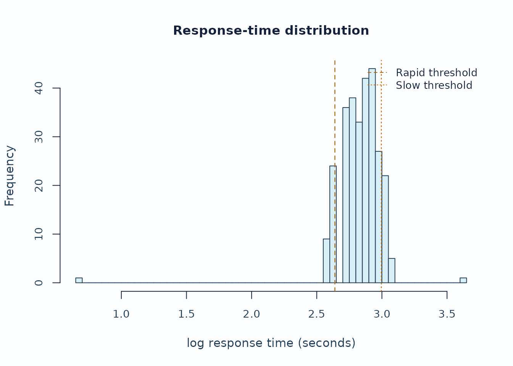
plot_response_time_review(rt, type = "person", preset = "publication")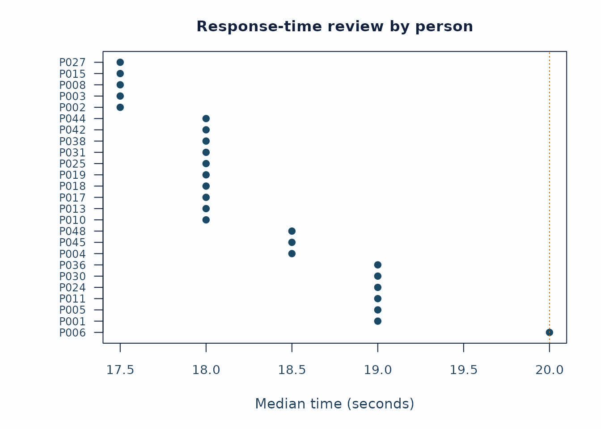
Interpretation:
- Start with the distribution plot to see whether the rapid/slow thresholds are sensible for this administration.
- Inspect person and facet summaries for concentrated rapid or slow rates rather than isolated events.
- Keep timing flags separate from fit, bias, and validity claims unless the study design explicitly supports stronger speed-accuracy modeling.
Small-N shrinkage with uncertainty
When a non-person facet has few levels or sparse observations, a large raw severity estimate can be a noisy estimate rather than a stable facet signal. The shrinkage funnel shows how far empirical-Bayes pooling moved each level toward the facet mean and whether the uncertainty remains wide after pooling.
fit_eb <- apply_empirical_bayes_shrinkage(fit)
shrink <- plot_shrinkage_funnel(
fit_eb,
show_ci = TRUE,
ci_level = 0.95,
preset = "publication",
draw = FALSE
)
head(shrink$data$table[, c(
"Facet", "Level", "RawEstimate", "RawCI_Lower", "RawCI_Upper",
"ShrunkEstimate", "ShrunkCI_Lower", "ShrunkCI_Upper",
"ShrinkageFactor"
)])
#> Facet Level RawEstimate RawCI_Lower RawCI_Upper ShrunkEstimate ShrunkCI_Lower
#> 1 Rater R01 -0.6059776 -1.04569977 -0.16625550 -0.3739155 -0.7193270
#> 3 Rater R02 -0.3820356 -0.79078871 0.02671748 -0.2486748 -0.5784554
#> 6 Rater R04 0.1799462 -0.25645356 0.61634590 0.1116787 -0.2321154
#> 5 Rater R05 0.1842365 -0.27475809 0.64323116 0.1099118 -0.2446091
#> 4 Rater R03 0.2120388 -0.21248930 0.63656689 0.1343311 -0.2035680
#> 2 Rater R06 0.4117917 -0.07719839 0.90078189 0.2329807 -0.1348274
#> ShrunkCI_Upper ShrinkageFactor
#> 1 -0.02850402 0.3829550
#> 3 0.08110572 0.3490794
#> 6 0.45547282 0.3793770
#> 5 0.46443264 0.4034204
#> 4 0.47223032 0.3664785
#> 2 0.60078878 0.4342269
plot_shrinkage_funnel(
fit_eb,
show_ci = TRUE,
ci_level = 0.95,
preset = "publication"
)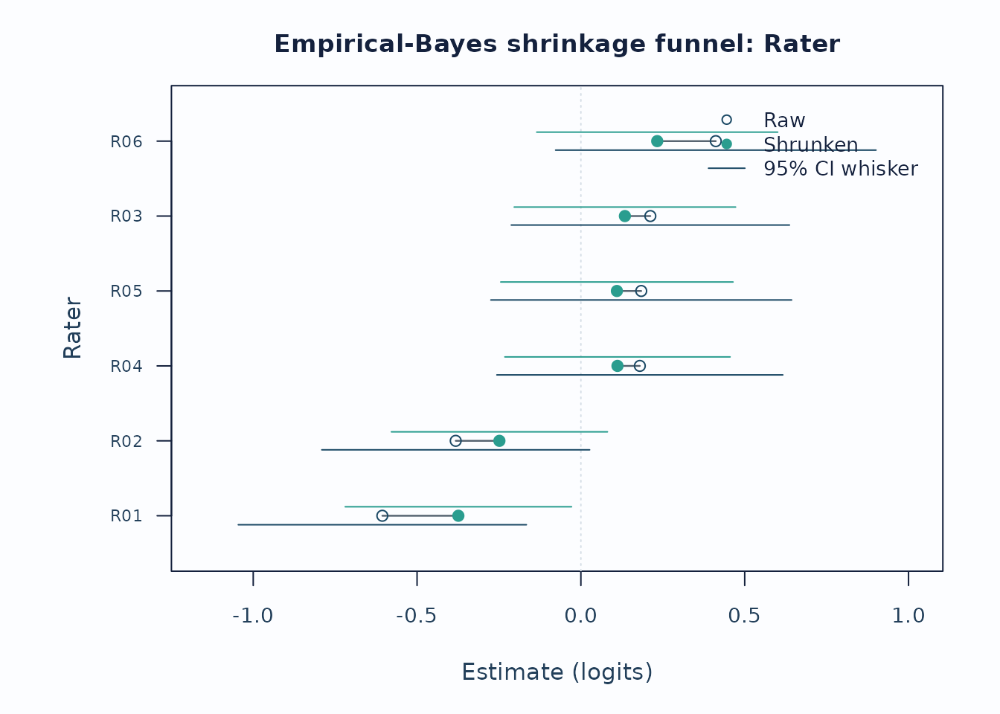
Interpretation:
- Long raw-to-shrunken segments identify levels most affected by the partial-pooling prior.
- Wide raw whiskers that narrow after pooling indicate estimation instability, not automatic rater-quality failure.
- Report the shrinkage method and keep this display separate from bias, fit, or validity claims.
Recommended sequence
For a compact visual workflow:
-
reporting_checklist()when you want the package to route which figures are already supported. -
plot_qc_dashboard()for one-page triage. -
plot_unexpected(),plot_displacement(),plot_marginal_fit(), andplot_interrater_agreement()for local follow-up. -
plot(fit, type = "wright")andplot(fit, type = "pathway")for targeting and scale interpretation. -
plot_residual_pca(),plot_bias_interaction(), andplot_information()for deeper structural review. -
response_time_review()andplot_response_time_review()when response-time metadata are available. -
plot_shrinkage_funnel(show_ci = TRUE)when empirical-Bayes shrinkage was applied. -
plot_guttman_scalogram(),plot_residual_qq(),plot_rater_trajectory(), andplot_rater_agreement_heatmap()as the teaching / drift / agreement-heatmap follow-up layer.
Related help
help("mfrmr_visual_diagnostics", package = "mfrmr")help("mfrmr_workflow_methods", package = "mfrmr")mfrmr_interval_guide("shrinkage")